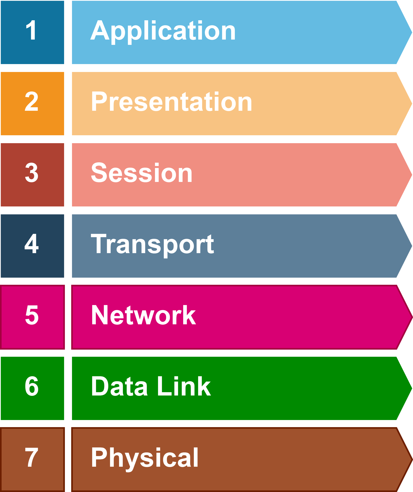

The 7-Layer OSI Model

- HTTP, FTP, IRC, SSH, DNS, URL
- SSL, SSH, IMAP, FTP, MPEG, JPEG
- API, Sockets, WinSock
- TCP, UPD
- IP, ICMP, IPSec, IGMP
- Ethernet, PPP, Switch, Bridge
- Coax, Fiber, Wireless, Hubs, Repeaters